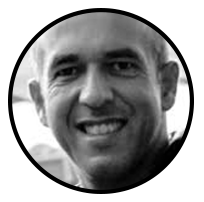

art
technology
Mario Feliciano
11 Março - DEI

Born in 1969, Mario studied graphic design at IADE (Lisbon) until 1993.
Before finishing his
degree he started to work as a graphic designer at Surf Portugal magazine, where he stayed there as art director during the next seven years. In 1994 he founded
his design studio (Secretonix) that produced a wide range of design projects from editorial to corporate design. After having commissioned one typeface for Adobe
(called Strumpf) and after publishing some of his early work in other foundries, in 2001 he creates the Feliciano Type Foundry and starts to publish his own designs
and creating custom typefaces for clients around the world. He is a member of ATypI since 1997. In 2006 Mário was the local organiser of the annual conference held
in Lisbon. He is also a member of AGI (Alliance Graphique Internationale) since 2009. He is the author of several custom typefaces, such as: Expresso (for the
Portuguese weekly newspaper Expresso), Sueca (for the Swedish newspaper Svenska Dagbladet), Majerit (for the Spanish newspaper El País) and BesSans for Banco
Espírito Santo. Feliciano's typefaces have been used by a wide range of clients around the world, from big corporations to renowned international publications such
as Newsweek, The Sunday Times or Elle Magazine. His most popular typeface is Flama that is used as a customised version on the Portuguese Passport and Citizen Card
along with his other typeface Merlo. In the recent years Mário has been working on expanding FTF's library and giving typographic consultancy.